第12章 女性生殖系统
原书页 355–386 · 32 个页面区块 · 53 张配图。正文、图注与图片保持原书顺序。
| ·BL | urinary bladder | 膀胱 |
| ·Cx | cervix | 宫颈 |
| ·D | douglas | 子宫直肠陷窝，又称道格拉斯窝 |
| ·E | endometrium | 子宫内膜 |
| ·LOv | left ovary | 左卵巢 |
| ·Ov | ovary | 卵巢 |
| ·ROv | right ovary | 右卵巢 |
| ·Ut | uterus | 子宫 |
第一节 子宫
一、 经腹扫查子宫
（一） 儿童期子宫纵断面（图12-1）
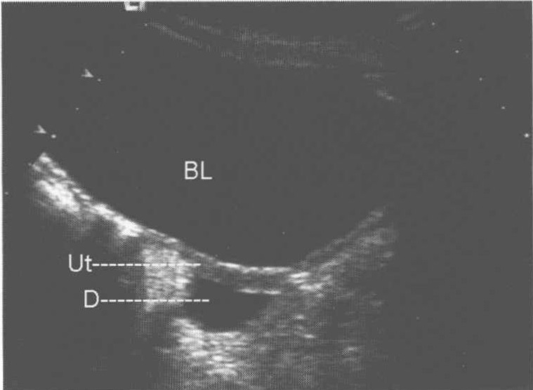
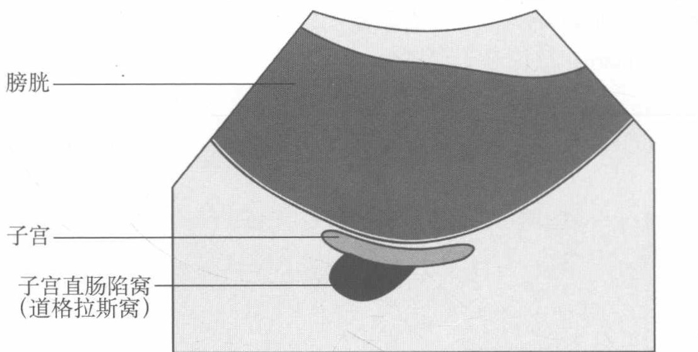
图12-1 儿童期子宫纵断面
【扫查方法】 充盈膀胱，探头纵向置于下腹部，声束方向经过子宫正中纵断面。【断面结构】 充盈的膀胱及子宫纵断面。子宫后方的无回声区为子宫直肠窝（道格拉斯窝）。
【测量方法及正常值】 测量子宫长径与前后径，长径的测量是自宫底表面至宫颈内口处的长度，正常值2.0～3.3cm，前后径测量是与上下径相垂直的最大前后距离，正常值0.5～1.0cm。
【临床价值】纵断面是了解子宫大小与形态是否正常的最重要断面，其后方的子宫直肠陷窝又称道格拉斯窝，英文也有两个名称，分别是 Douglas 或 cul-de-sac，这是人体腹腔的位置最低点，当腹腔内有渗液、出血或感染时，各种液体常聚集于此。
（二） 儿童期子宫横断面（图12-2）
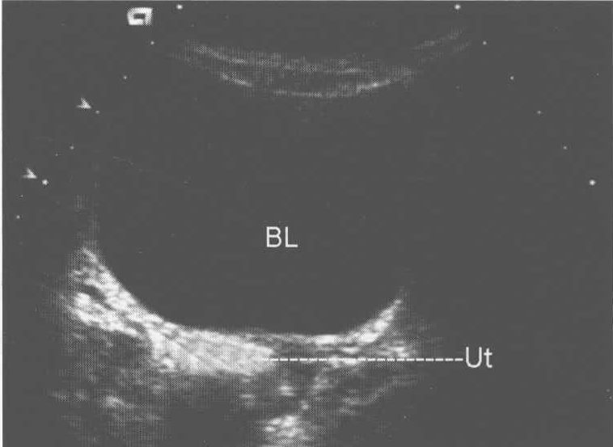
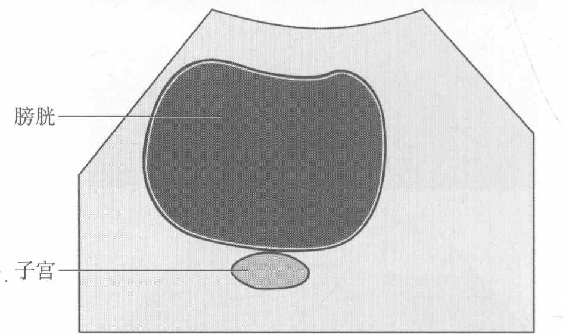
图12-2 儿童期子宫横断面
【扫查方法】探头横向置于下腹部腹壁表面，声束方向经过子宫体最大横断面。
【断面结构】充盈的膀胱及子宫横断面。
【测量方法】 测量子宫的左右径，也就是子宫的宽度。
【临床价值】此横断面是了解子宫大小与形态是否正常的另一个重要断面。
（三） 育龄期妇女前位子宫纵断面（图12-3）
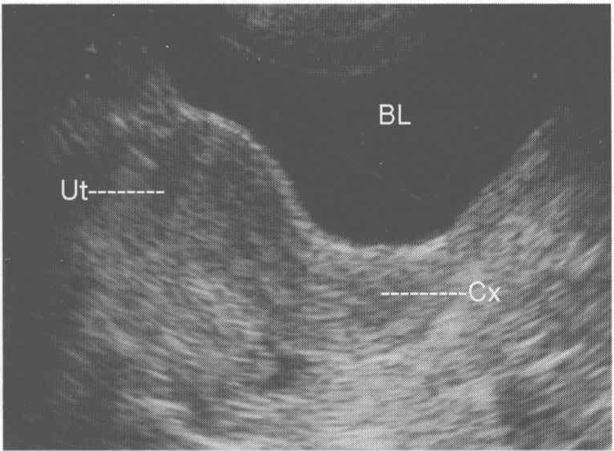
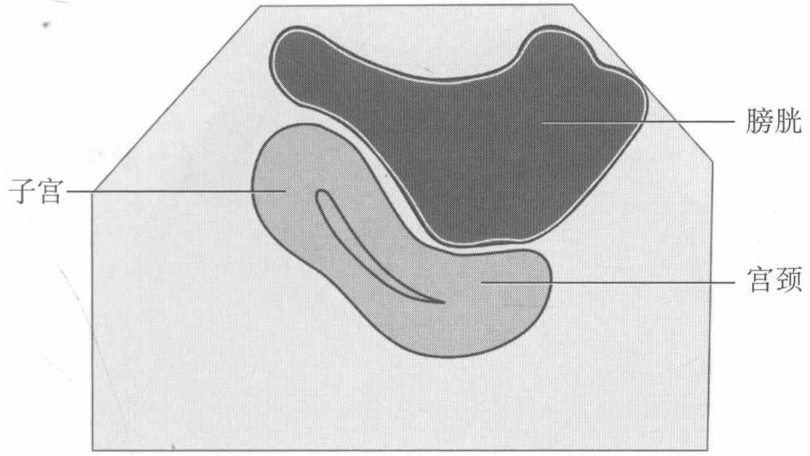
图12-3 育龄期妇女前位子宫纵断面
【断面结构】膀胱及子宫的纵断面，位于子宫中央的强回声线是宫腔线。
【扫查方法】 探头纵向置于下腹部腹壁表面，声束方向经过子宫正中纵断面。
【测量方法及正常值】在此断面上测量子宫长径与前后径，长径的测量是自宫底表面至宫颈内口处的长度，正常值5～7cm，前后径测量是与长径相垂直的最大前后距离，正常值3～4cm。
【临床价值】纵断面是判断子宫位置、了解子宫大小与形态是否正常的最重要断面。
（四） 育龄期妇女前位子宫横断面（图12-4）
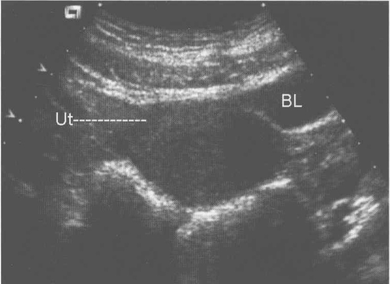
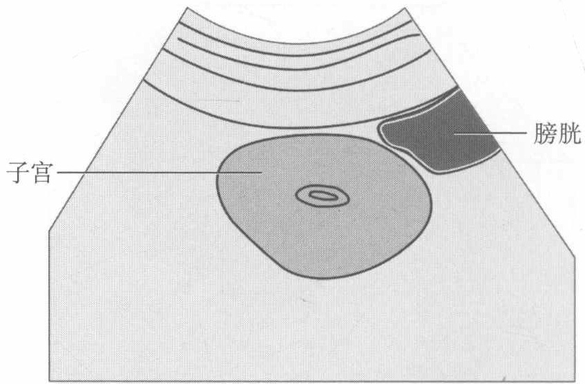
图12-4 育龄期妇女前位子宫横断面
【扫查方法】 探头横向置于下腹部腹壁表面，声束方向经过子宫体最大横断面。
【断面结构】膀胱及子宫的横断面，左侧是子宫右侧壁，右侧是子宫左侧壁。
【测量方法及正常值】子宫大小的测量在此断面上主要是测量子宫的左右径，也就是子宫的宽度，正常值4.5～5.5cm。
【临床价值】横断面是了解子宫大小与形态是否正常的另一个重要断面。
（五） 育龄期妇女中位子宫纵断面（图12-5）
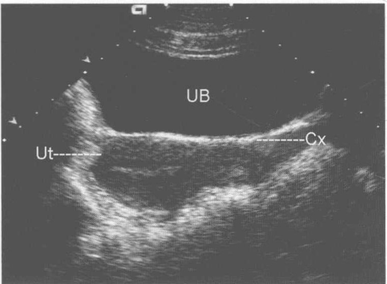
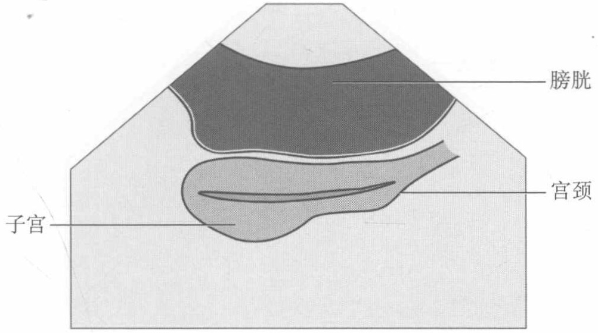
图12-5 育龄期妇女中位子宫纵断面
【扫查方法】 探头纵向置于下腹部腹壁表面，声束方向经过子宫正中纵断面。
【断面结构】 膀胱及子宫纵断面，左侧朝向头顶方向的是宫底，右侧的是宫颈，位于子宫中央的强回声线是宫腔线。
【测量方法及正常值】在此断面上测量子宫长径与前后径，长径的测量是自宫底表面至宫颈内口处的长度，正常值5～7cm，前后径测量是与长径相垂直的最大前后距离，正常值3～4cm。
【临床价值】纵断面是判断子宫位置、了解子宫大小与形态是否正常的最重要断面。
（六） 育龄期妇女中位子宫横断面（图12-6）
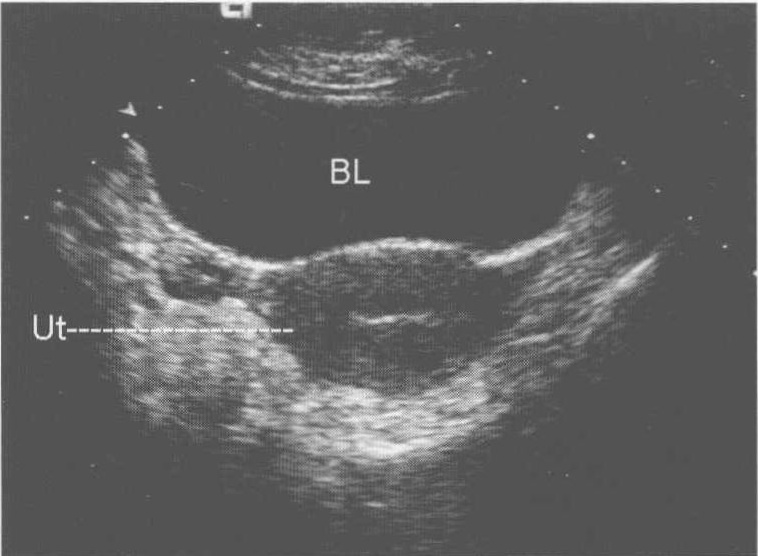
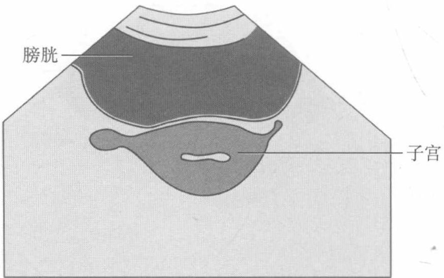
图12-6 育龄期妇女中位子宫横断面
【扫查方法】探头横向置于下腹部腹壁表面，声束方向经过子宫体最大横断面。
【断面结构】腹壁下方的无回声区是充盈的膀胱，其后方是子宫，左侧是子宫右侧壁，右侧是子宫左侧壁，位于子宫中央的强回声线是宫腔线。
【测量方法及正常值】在此断面上测量子宫长径与前后径，长径的测量是自宫底表面至宫颈内口处的长度，正常值5～7cm，前后径测量是与长径相垂直的最大前后距离，正常值3～4cm。
【临床价值】纵断面是判断子宫位置、了解子宫大小与形态是否正常的最重要断面。
（七） 育龄期妇女后位子宫纵断面（图12-7）
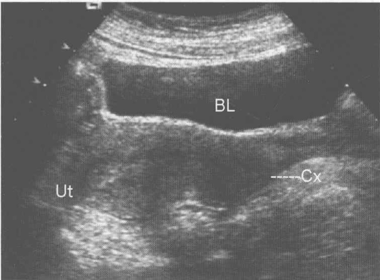
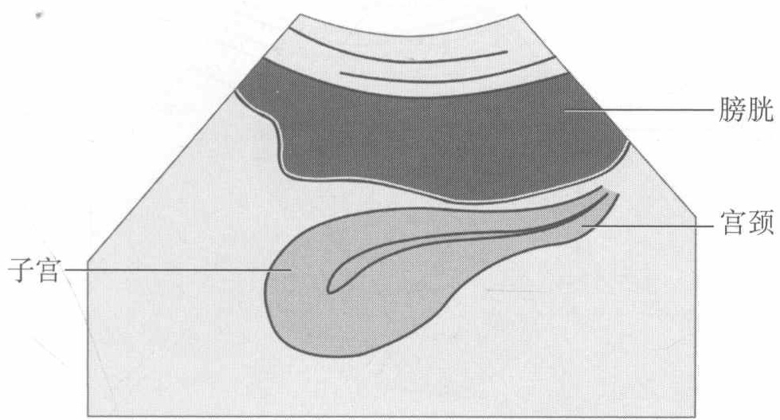
图12-7 育龄期妇女后位子宫纵断面
【断面结构】腹壁下方的无回声区是充盈的膀胱，其后方是子宫，左侧朝向后背方向的是宫底，右侧的是宫颈，位于子宫中央的强回声带是子宫内膜。
【扫查方法】 探头纵向置于下腹部腹壁表面，声束方向经过子宫正中纵断面。
【测量方法及正常值】在此断面上测量子宫长径与前后径，长径的测量是自宫底表面至宫颈内口处的长度，正常值5～7cm，前后径测量是与长径相垂直的最大前后距离，正常值为3～4cm。
【临床价值】纵断面是判断子宫位置、了解子宫大小与形态是否正常的最重要断面。
（八） 育龄期妇女后位子宫横断面（图12-8）
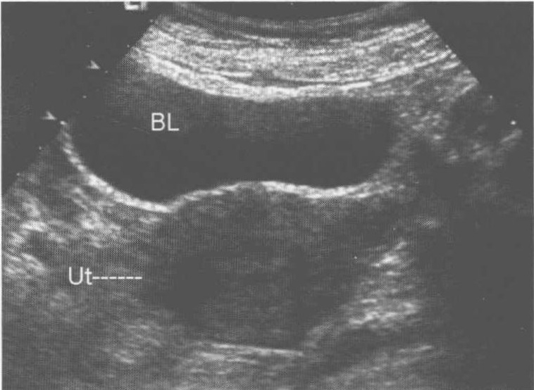
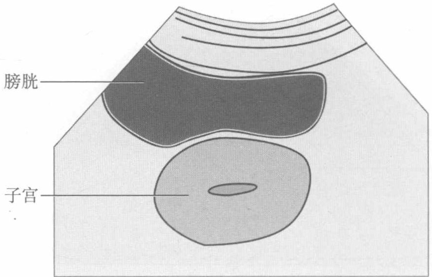
图12-8 育龄期妇女后位子宫横断面
【扫查方法】探头横向置于下腹部腹壁表面，声束方向经过子宫体最大横断面。
【断面结构】腹壁下方的无回声区是充盈的膀胱，其后方是子宫，左侧是子宫右侧壁，右侧是子宫左侧壁，位于子宫中央的强回声带是子宫内膜。
【测量方法及正常值】子宫大小的测量在此断面上主要是测量子宫的左右径，也就是子宫的宽度，正常值4.5～5.5cm。
【临床价值】横断面是判断子宫位置、了解子宫大小与形态是否正常的最重要断面。
（九）绝经后的老年子宫纵断面（图12-9）
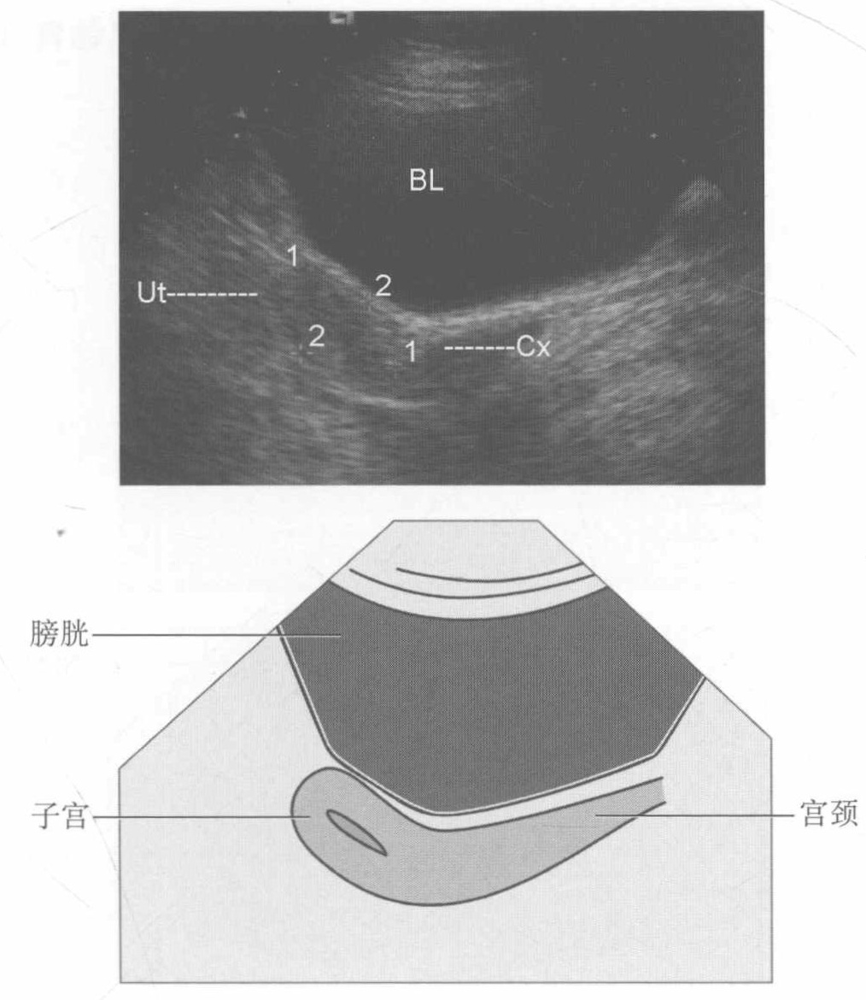
图12-9 绝经后的老年子宫纵断面
【断面结构】腹壁下方的无回声区是充盈的膀胱，其后方是子宫，左侧略朝向腹壁方向的是宫底，右侧的是宫颈，宫腔线或子宫内膜常显示不清。
【扫查方法】 探头纵向置于下腹部腹壁表面，声束方向经过子宫正中纵断面。
【测量方法及正常值】测量方法同育龄期子宫，其长径与前后径随绝经年限的延长逐渐缩小。
【临床价值】纵断面是判断子宫位置、了解子宫大小与形态是否正常的最重要断面。
（十） 绝经后的老年子宫横断面（图12-10）
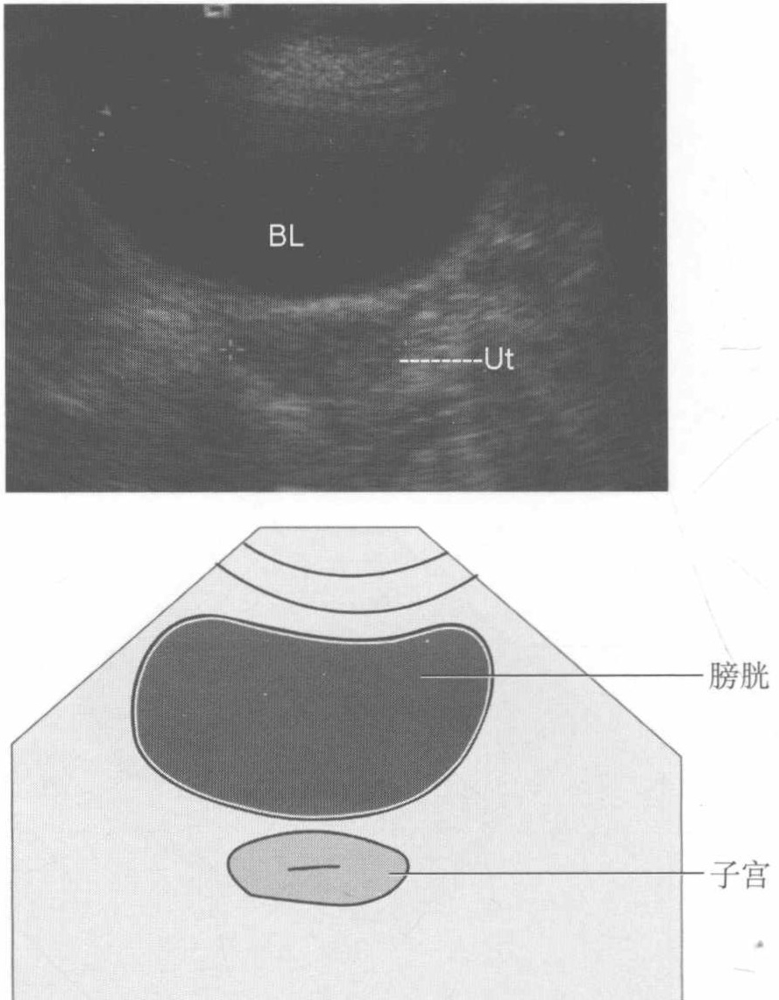
图12-10 绝经后的老年子宫横断面
【扫查方法】 探头横向置于下腹部腹壁表面，声束方向经过子宫体最大横断面。
【断面结构】腹壁下方的无回声区是充盈的膀胱，其后方是子宫，左侧是子宫右侧壁，右侧是子宫左侧壁，宫腔线或子宫内膜常显示不清。
【测量方法】 测量方法同育龄期子宫，其横径随绝经年限的延长逐渐缩小。
【临床价值】横断面是判断子宫位置、了解子宫大小与形态是否正常的最重要断面。
二、 经阴道扫查子宫
（一） 育龄期妇女前位子宫的纵断面（图12-11）
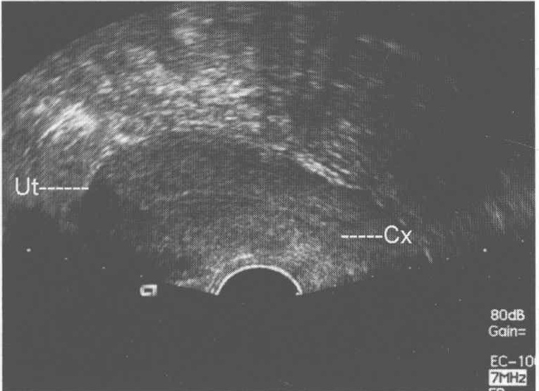
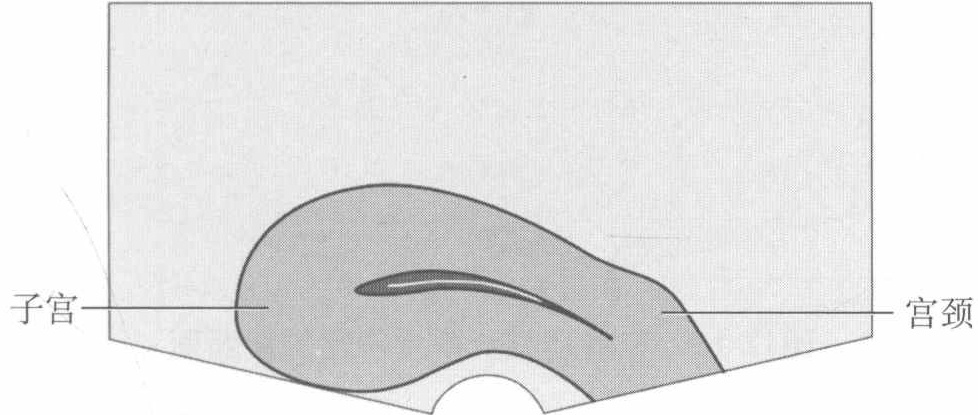
图12-11 育龄期妇女前位子宫的纵断面
【扫查方法】 探头置于阴道内，声束方向经过子宫正中纵断面。
【断面结构】朝向左侧腹壁方向的是子宫底，下方紧贴探头的是子宫前壁，朝向右侧后背方向的是宫颈，位于子宫中央的强回声线是宫腔线。
【测量万法及正常值】在此断面上测量子宫长径与前后径，长径的测量是自宫底表面至宫颈内口处的长度，正常值5～7cm，前后径测量是与长径相垂直的最大前后距离，正常值3～4cm。
【临床价值】经阴道纵断面扫查是了解子宫大小与形态是否正常的最重要断面，此切面显示的子宫内膜明显较经腹超声显示的清晰，所以也是了解子宫内膜及宫腔内情况的最重要切面之一。
（二） 育龄期妇女前位子宫的横断面（图12-12）
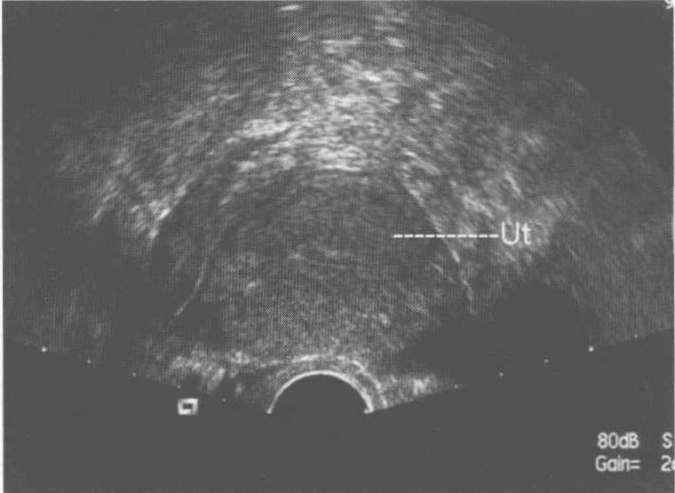
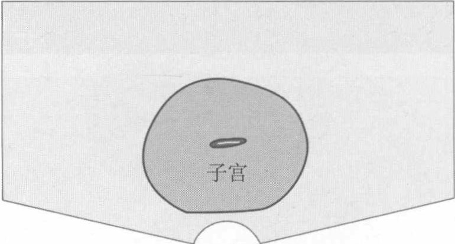
图12-12 育龄期妇女前位子宫的横断面
【扫查方法】 探头置于阴道内，声束方向经过子宫体横断面。
【断面结构】朝向左侧的是子宫右侧壁，下方紧贴探头的是子宫前壁，朝向右侧的是子宫左侧壁，位于子宫中央的强回声线是宫腔线。
【测量方法及正常值】子宫大小的测量在此断面上主要是测量子宫的左右径，也就是子宫的宽度，正常值4.5～5.5cm。
【临床价值】经阴道横断面扫查是了解子宫大小与形态是否正常的另一个重要断面，同时也是了解子宫内膜及宫腔内情况的重要切面。
（三） 育龄期妇女中位子宫的纵断面（图12-13）
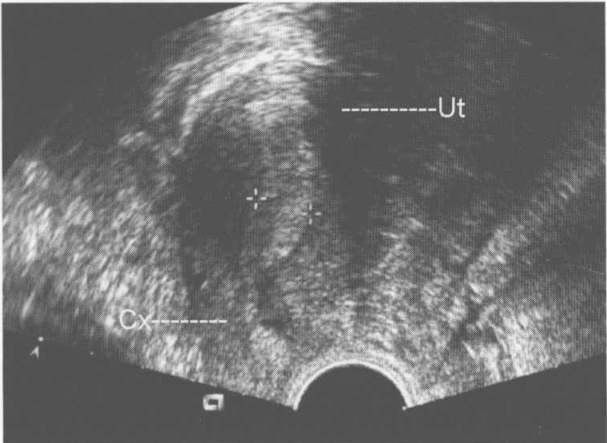
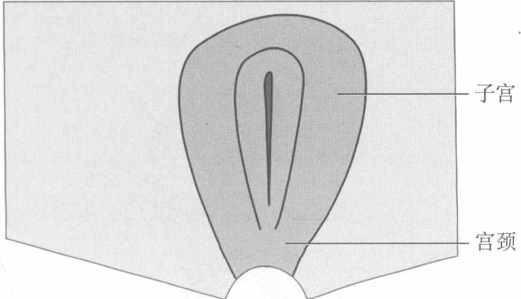
图12-13 育龄期妇女中位子宫的纵断面
【扫查方法】 探头置于阴道内，声束方向经过子宫正中纵断面。
【断面结构】朝向左侧的是子宫前壁，下方紧贴探头的是宫颈，朝向右侧的是子宫后壁，朝向上方的是子宫底，位于子宫中央的强回声带是子宫内膜。
（四） 育龄期妇女中位子宫的冠状断面（图12-14）
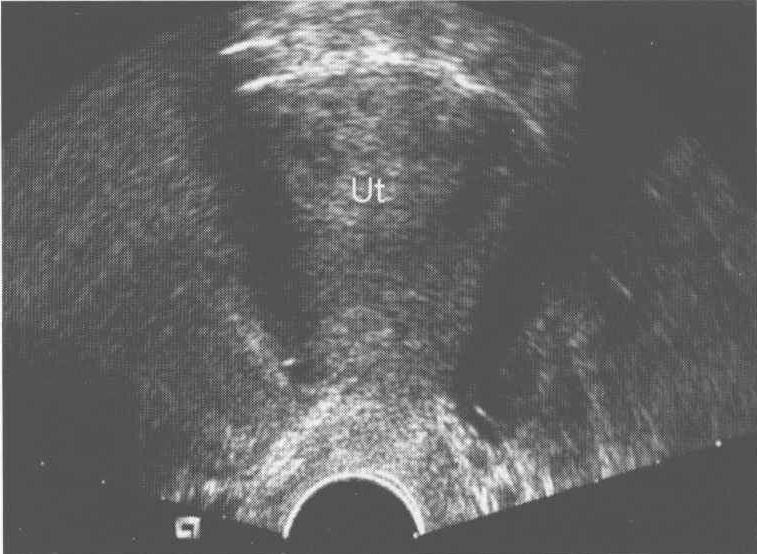
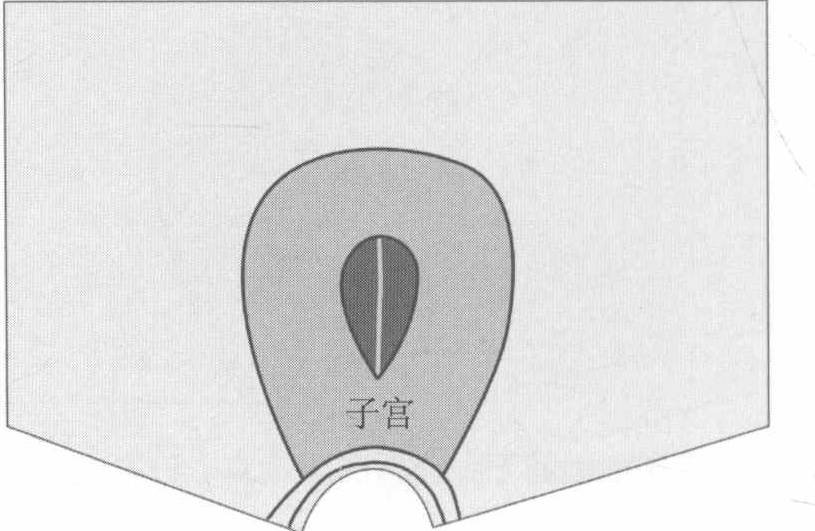
图12-14 育龄期妇女中位子宫的冠状断面
【扫查方法】 探头置于阴道内，声束方向经过子宫体冠状断面。
【断面结构】朝向左侧的是子宫右侧壁，下方紧贴探头的是宫颈，朝向右侧的是子宫左侧壁，位于子宫中央的强回声区是子宫内膜。
（五）育龄期妇女后位子宫的纵断面（图12-15）
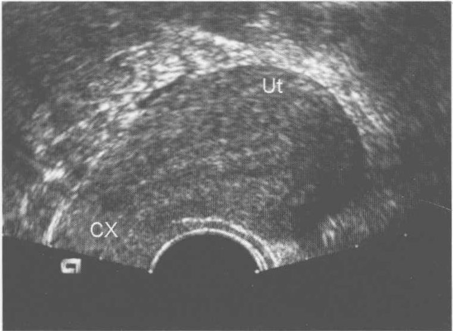
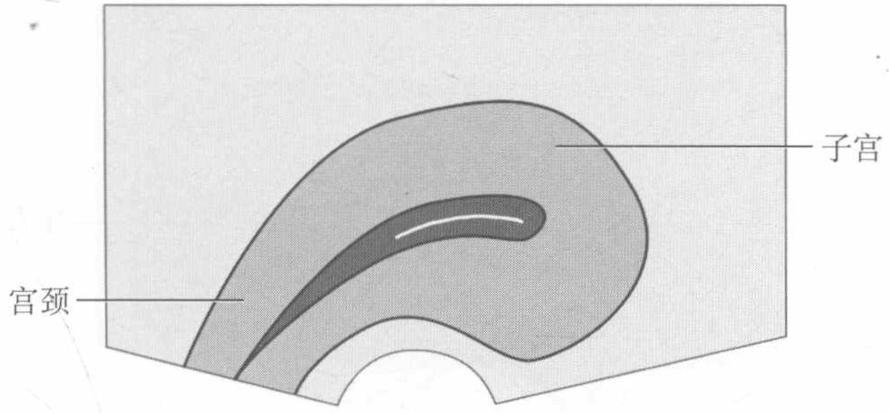
图12-15 育龄期妇女后位子宫的纵断面
【断面结构】朝向右侧腹壁方向的是宫颈，下方紧贴探头的是子宫后壁，朝向左侧后背方向的是子宫底，位于子宫中央的强回声线是宫腔。
【扫查方法】 探头置于阴道内，声束方向经过子宫正中纵断面。
【临床价值】经阴道纵断面扫查是了解子宫大小与形态是否正常的最重要断面，同时也是了解子宫内膜及宫腔内情况的最重要切面之一。
（六） 育龄期妇女后位子宫的横断面（图12-16）
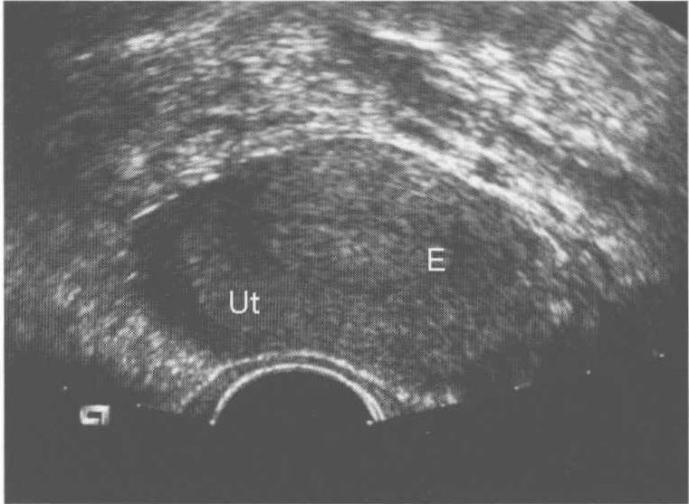
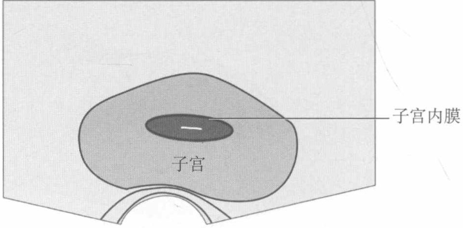
图12-16 育龄期妇女后位子宫的横断面
【扫查方法】 探头置于阴道内，声束方向经过子宫体横断面。
【断面结构】朝向左侧的是子宫右侧壁，下方紧贴探头的是子宫后壁，朝向右侧的是子宫左侧壁，位于子宫中央的强回声区是子宫内膜。
【临床价值】经阴道横断面扫查是了解子宫大小与形态是否正常的另一个重要断面，同时也是了解子宫内膜及宫腔内情况的重要切面。
（七） 育龄期妇女增殖期内膜（图12-17）
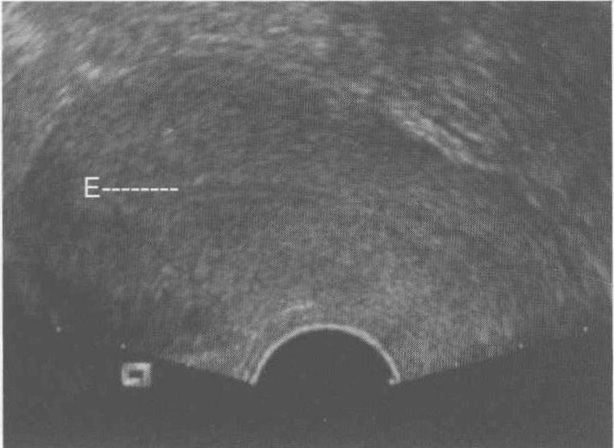
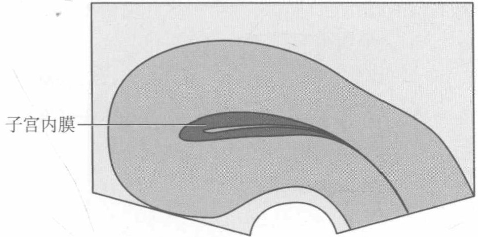
图12-17 育龄期妇女增殖期内膜
【扫查方法】 探头置于阴道内，声束方向经过子宫体纵断面及横断面扫查。
【断面结构】位于子宫中央的三条强回声线之间的窄条状低回声区是增殖期子宫内膜，正中央的强回声线是宫腔线。
【测量方法及正常值】子宫内膜厚度的测量一般是在纵断面上进行，测量的是两层子宫内膜厚度，也就是在垂直于宫腔线的方向测量子宫中央两条外侧腔回声线之间的厚度，增殖期的子宫内膜比较薄，回声也比较低且均匀一致。增殖期子宫内膜呈线状，渐增厚至1～3mm。
【临床价值】观察子宫内膜的厚度与回声可以对子宫内膜的病变进行诊断，如果增殖早期的内膜明显增厚，且回声及厚度不均匀一致，很可能有子宫内膜增生。宫腔线的部位如出现偏强回声团，有可能为子宫内膜息肉。
（八） 育龄期妇女分泌期内膜（图12-18）
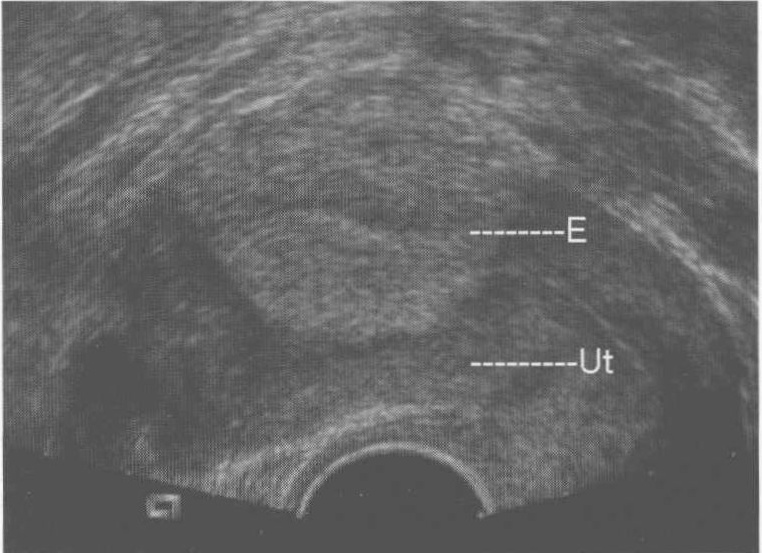
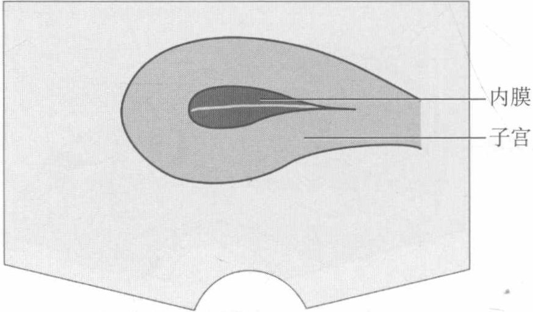
图12-18 育龄期妇女分泌期内膜
【扫查方法】 探头置于阴道内，声束方向经过子宫体纵断面及横断面扫查。
【断面结构】位于子宫中央的强回声区是分泌期子宫内膜，正中央的强回声线此时可能不是很清晰。
【测量方法及正常值】分泌期的子宫内膜比较厚，回声也比较强，一般情况下分泌期内膜的回声是均匀一致的，分泌晚期的内膜也有可能回声及厚度不均匀一致。分泌期子宫内膜厚6～14mm。
【临床价值】分泌晚期的内膜明显增厚，其回声及厚度不均匀一致时并不一定表示有子宫内膜增生。若临床有症状怀疑此病，则应在下次月经刚刚干净时复查以排除误诊。
（九）绝经后老年子宫的纵断面（图12-19）
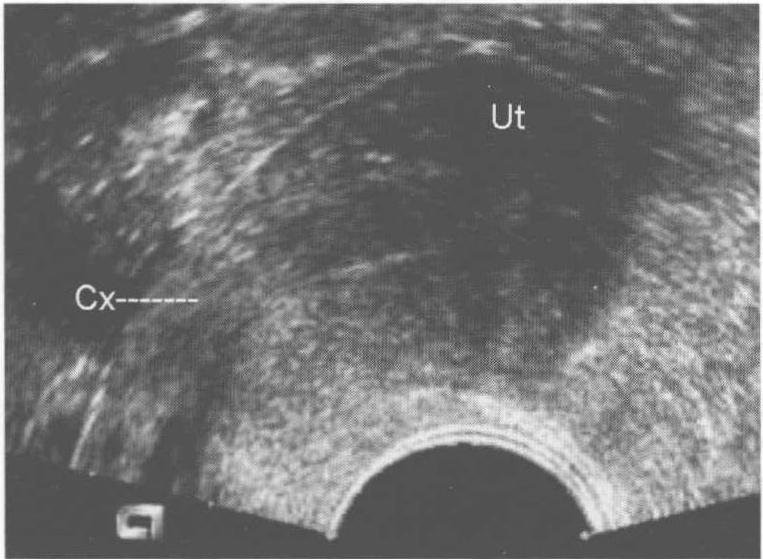
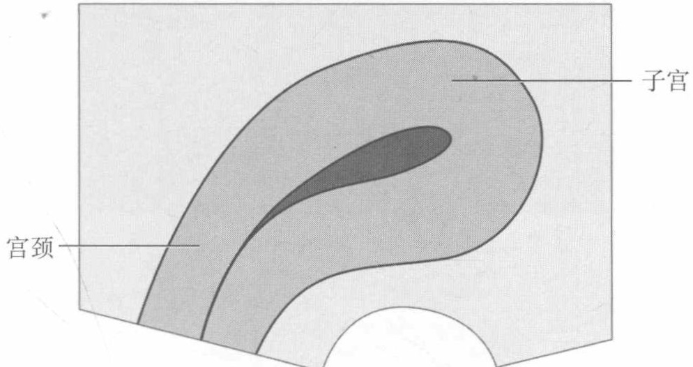
图12-19 绝经后老年子宫的纵断面
【扫查方法】 探头置于阴道内，声束方向经过子宫体纵断面。
【断面结构】朝向左侧的是宫颈及前壁，下方紧贴探头的是子宫后壁，朝向右侧的是子宫底部，位于子宫中央的强回声线是宫腔线。
【测量方法及正常值】 测量方法同前述，绝经后子宫随绝经时间的延长逐渐缩小，肌壁回声的均匀性下降，子宫内膜变薄，一般厚度不超过5mm。
【临床价值】绝经后子宫多为中位或后位，经阴道扫查能更好地观察了解子宫大小与形态，同时也能更好地了解子宫内膜及宫腔内情况。
（十） 绝经后老年子宫的横断面（图12-20）
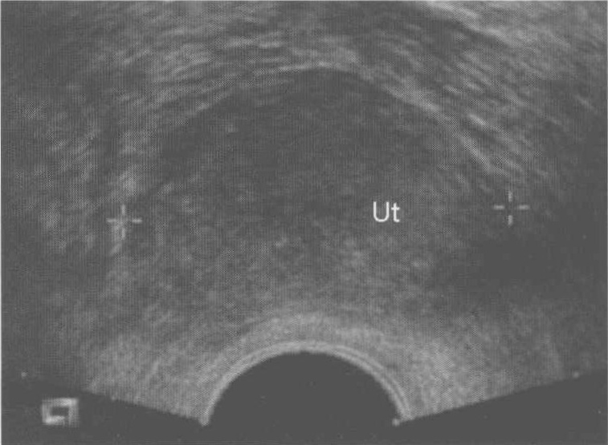
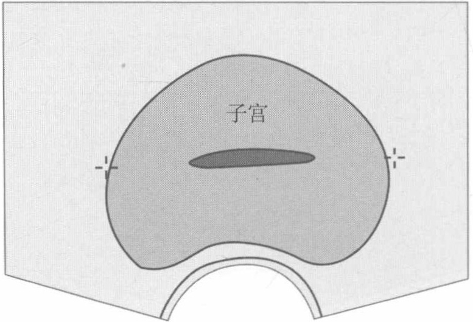
图12-20 绝经后老年子宫的横断面
【扫查方法】 探头置于阴道内，声束方向经过子宫体横断面。
【断面结构】朝向左侧的是子宫右侧壁，朝向右侧的是子宫左侧壁，位于子宫中央的强回声线是宫腔线。
【测量方法及正常值】测量方法同育龄期子宫，其横径随绝经年限的延长逐渐缩小。
【临床价值】横断面是判断子宫位置、了解子宫大小与形态是否正常的最重要断面。
第二节 卵 巢
一、 经腹扫查卵巢
（一） 儿童期卵巢（图12-21）
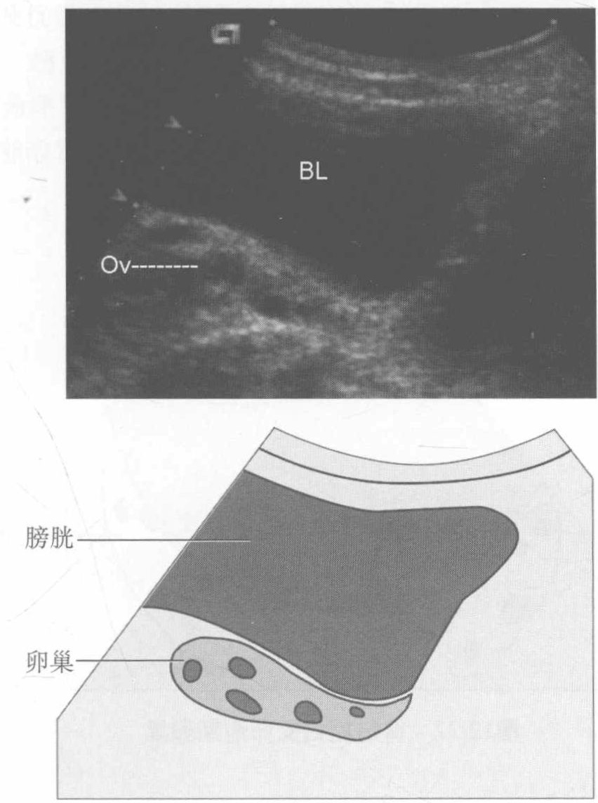
图12-21 儿童期卵巢
【扫查方法】 探头置于下腹部腹壁表面横向、纵向或斜向进行多角度及多切面扫查，声束方向经过膀胱声窗后显示卵巢最大断面。
【断面结构】腹壁下方的无回声区是充盈的膀胱，其后方是卵巢，卵巢内可见卵泡形成的卵圆形无回声区，大小不等。
【测量方法及正常值】儿童期卵巢较小，12岁以前卵巢容积为 2 cm3，内含有
多个最大直径 ≥0.4cm 的卵泡，卵泡最大直径甚至可达0.9cm。
【临床价值】超声检查发现了正常卵巢可除外卵巢疾病，未显示正常卵巢也不能据此认为卵巢缺如或发育不良。
（二） 育龄期妇女卵泡期卵巢（图12-22）
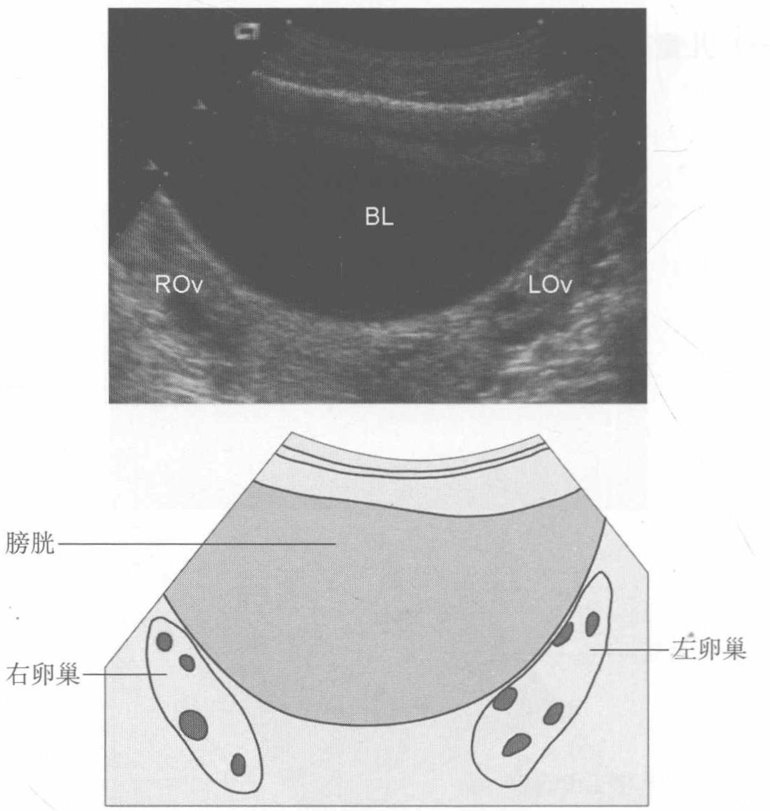
图12-22 育龄期妇女卵泡期卵巢
【扫查方法】 探头置于下腹部腹壁表面，进行多角度及多切面扫查，声束方向经过膀胱声窗后显示卵巢最大断面。
【断面结构】腹壁下方的无回声区是充盈的膀胱，其左后方是右卵巢，其右后方是左卵巢，双卵巢内可见卵泡形成的卵圆形无回声区，大小不等，最大卵泡的最大直径可超过2.0cm。
【测量方法及正常值】卵巢的测量包括卵巢大小、卵泡数量及最大卵泡的大小，卵巢大小是在互相垂直的两个最大断面测量长、宽、厚三个径，其大小随卵泡数量及优势卵泡大小的变化而变化，长径可超过3cm。
【临床价值】 超声检查发现了正常卵巢可除外卵巢疾病，未显示正常卵巢也不能据此认为卵巢缺如，通过对卵泡数量及大小的检查可了解是否患有多囊卵巢，了解卵泡发育情况并监测排卵。
（三） 育龄期妇女黄体期卵巢（图12-23）
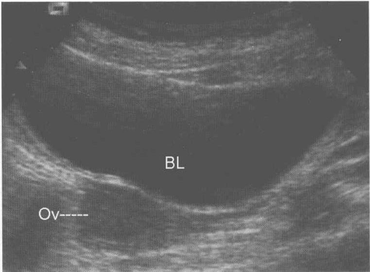
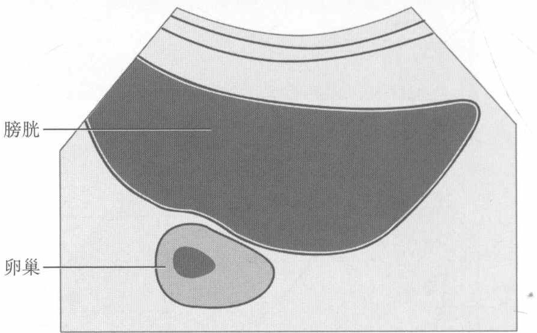
图12-23 育龄期妇女黄体期卵巢
【扫查方法】 探头置于下腹部腹壁表面进行多角度及多切面扫查，声束方向经过膀胱声窗后显示卵巢最大断面。
【断面结构】腹壁下方的无回声区是充盈的膀胱，其后方偏左是右卵巢，卵巢内的厚壁囊性结构就是黄体，黄体内的透声性一般较差。
【测量方法及正常值】 黄体的大小及形态会有一些差异，其大小测量无临床意义。
【临床价值】超声检查发现了黄体可提示卵巢已排卵。
（四）育龄期妇女卵巢黄体囊肿（图12-24）
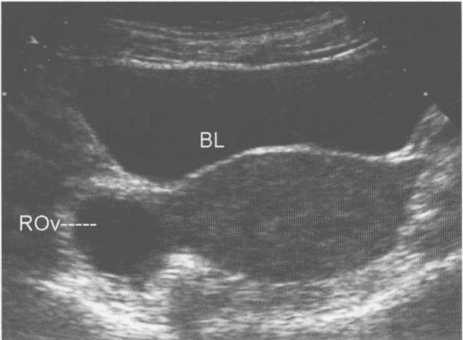
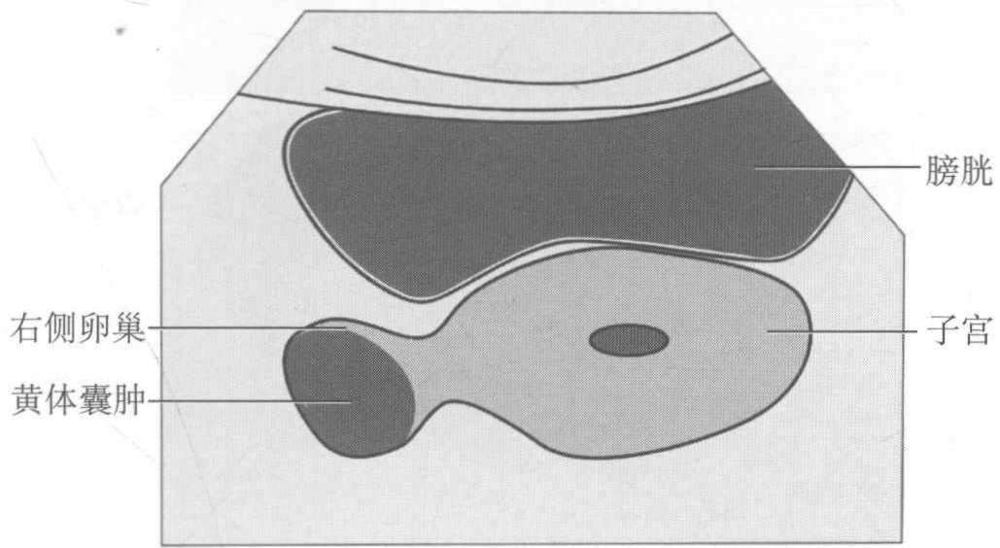
图12-24 育龄期妇女卵巢黄体
【扫查方法】 探头置于下腹部腹壁表面进行多角度及多切面扫查，声束方向经过膀胱声窗后显示卵巢囊肿最大断面。
【断面结构】腹壁下方的无回声区是充盈的膀胱，其后方偏左是右卵巢，卵巢内的囊肿就是黄体囊肿，黄体囊肿一般不超过5cm，也有少数例外者。
【测量方法及正常值】 黄体囊肿的大小、形态及内部回声有时差异较大，月经干净后会逐渐缩小消失。
【临床价值】 超声检查偶然发现的囊肿有可能是生理性囊肿，如黄体囊肿，诊断卵巢肿瘤需慎重，必要时随访观察一段时间后再下诊断意见也不迟。
（五） 绝经后卵巢（图12-25）
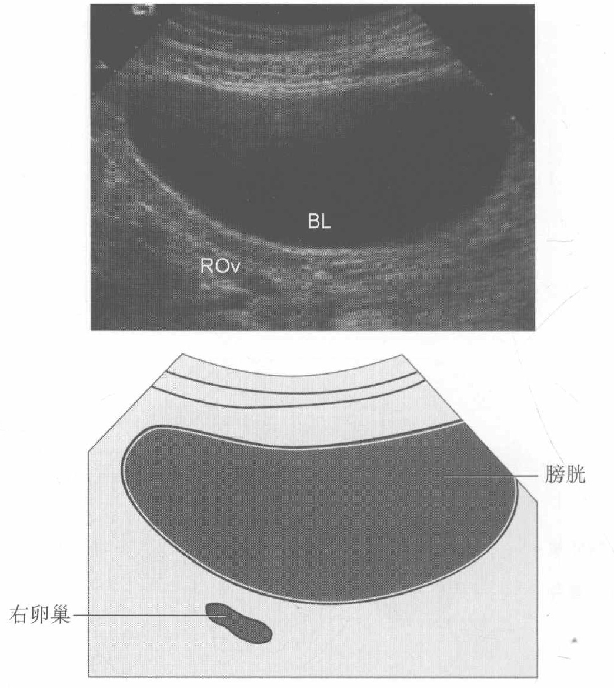
图12-25 绝经后卵巢
【扫查方法】 探头置于下腹部腹壁表面进行多角度及多切面扫查，声束方向经过膀胱声窗后可显示位于其后方的卵巢。
【断面结构】腹壁下方的无回声区是充盈的膀胱，其后方略偏左的低回声结节是卵巢，卵巢内的卵泡在此阶段多已消失。
【测量方法】 绝经后卵巢萎缩变小，一般无需测量其大小。
【临床价值】经腹超声检查因卵巢变小常常不能显示，卵巢未显示属正常状态。
二、 经阴道扫查卵巢
（一） 育龄期妇女卵泡期卵巢（图12-26）
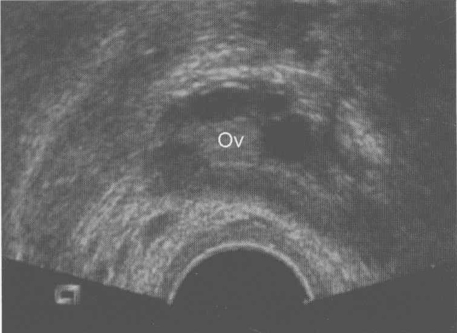
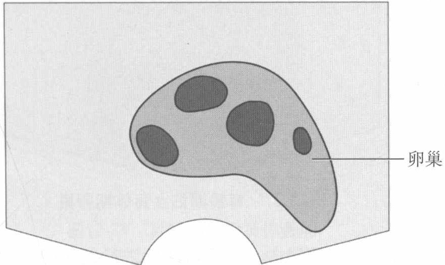
图12-26 育龄期妇女卵泡期卵巢
【扫查方法】 探头置于阴道内，在子宫两侧进行矢状切面、冠状切面等多切面扫查。
【断面结构】卵巢呈椭圆形，内可见多个大小不等的卵泡无回声区。
【测量方法及正常值】 卵泡期的优势卵泡随时间的延长逐渐长大，成熟卵泡最大径可超过2.0cm。
【临床价值】经阴道超声追踪检查，可监测优势卵泡的生长发育情况，并帮助判断排卵时间，指导不孕症的治疗。
（二） 育龄期妇女黄体期卵巢（图12-27）
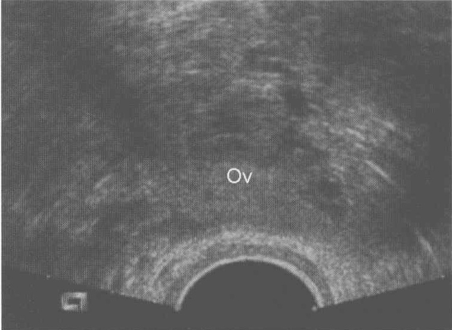
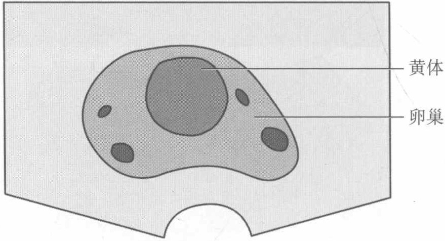
图12-27 育龄期妇女黄体期卵巢
【扫查方法】 探头置于阴道内，在子宫两侧进行矢状切面、冠状切面等多切面扫查。
【断面结构】卵巢呈椭圆形，内可见黄体呈类圆形类实性结构，回声不均。
【测量方法及正常值】 黄体大小、结构及回声变异很大，其大小测量无临床意义。
【临床价值】超声检查发现了黄体可提示卵巢已排卵。
（三） 育龄期妇女黄体囊肿（图12-28）
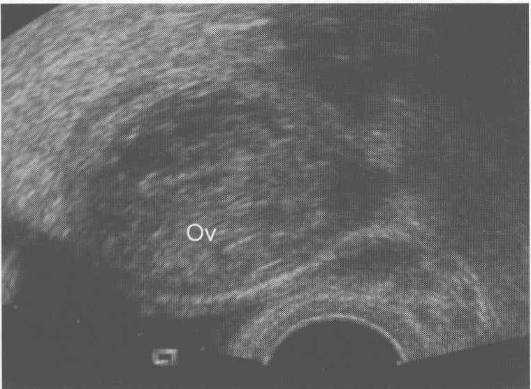
图12-28 育龄期妇女黄体囊肿
【断面结构】 黄体囊肿多呈圆形或椭圆形，囊壁多较厚，内部可呈无回声，也可呈网络状回声，有时还可见絮状回声在探头触动囊肿时漂浮于囊腔内。
【扫查方法】 探头置于阴道内，在子宫两侧进行矢状切面、冠状切面等多切面扫查。
【测量方法】 黄体囊肿大小及回声变异很大，合并囊腔内出血时声像图表现更为复杂，易于卵巢肿瘤相混淆，应特别注意鉴别。
【临床价值】 黄体囊肿是生理性囊肿，可自行消失，超声明确诊断可避免不必要的手术。
（四） 绝经后卵巢（图12-29）
图12-29 绝经后卵巢
【扫查方法】 探头置于阴道内，在子宫两侧进行矢状切面、冠状切面等多切面扫查。
【断面结构】卵巢呈椭圆形，体积缩小，其内部的卵泡常常消失，呈实性低回声结构。
【测量方法】 绝经后卵巢的大小及内部结构差异也很大，有些绝经后卵巢内仍可见卵泡样小无回声区。
【临床价值】超声检查发现了体积缩小的卵巢可除外卵巢异常，超声检查未显示卵巢也属正常情况。
（汪龙霞）